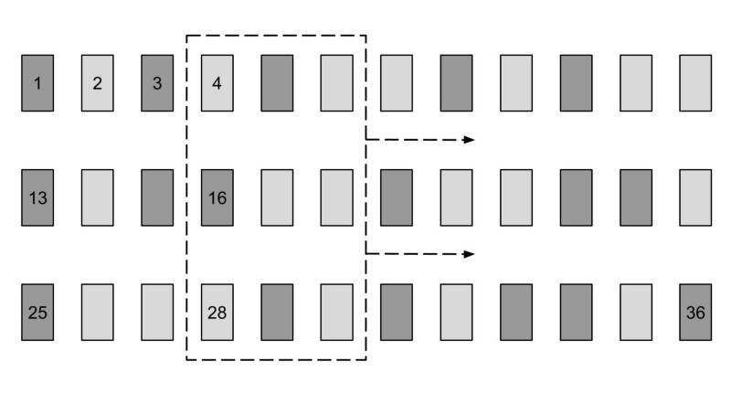
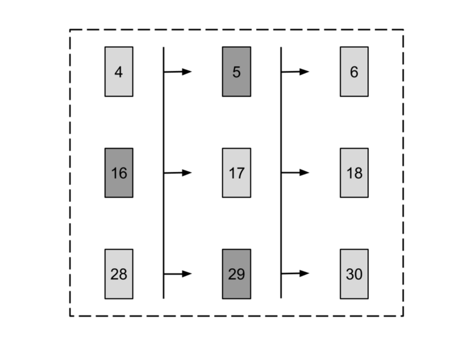
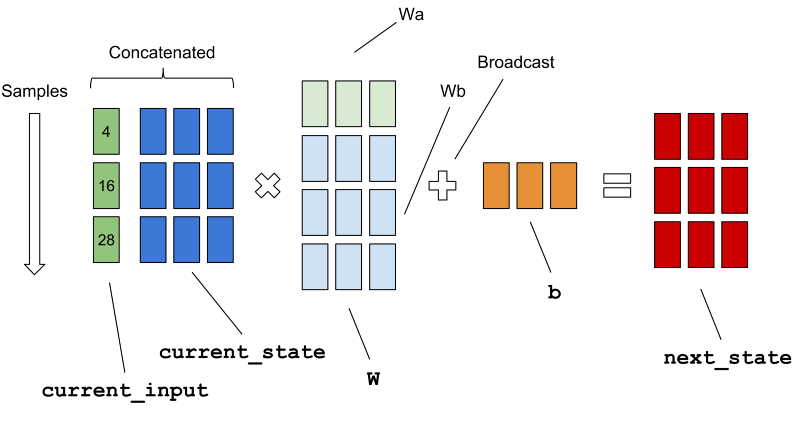
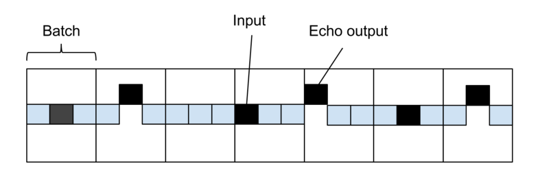

原文 https://medium.com/@erikhallstrm/hello-world-rnn-83cd7105b767 系列文章介绍了如何在 TensorFlow 中间建立一个神经网络。 这是第一部分，覆盖了很多基本的概念和技术。它从 RNN 开始进行介绍。
RNN 是什么 RNN 是 Recurrent Neural Network（循环神经网络） 的简写。基本上其就是一个可以在你的数据被当做序列来对待时使用的 神经网络 ，在这个序列中，数据点的顺序很重要。更重要的是，序列可以有 任意长度 。
最直接的例子可能就是一系列的数字的时间序列了，在这个序列中的任务就是通过前面的数字来预测下一个数字。在 RNN 每个时间步长这的输入是 当前值 和一个 状态向量 ，这个状态向量代表了这个网络在这个步长前所”看到“内容。这个 状态向量 就是 RNN 的编码存储器，初始设置为0。
至今为止我所发现的最全面介绍 RNN 的文章在 这里 。现在我们只需要了解一些基础的就行了，当我们在讲到 Modern RNN architectures 一节的时候，就需要阅读一下了。这个随后再说。
尽管这篇文章包含了一些解释，但我们只是聚焦怎么样使用它。不过建议还是更多的了解一下其理论，原理，那里面的解释更加的丰富。
反向传播 反向传播算法对于快速训练大型神经网络来说至关重要。本文将介绍该算法的工作原理。谷歌有一个对此的演示。反向传播算法
其基本的含义是理解起来我是感觉有点恼火的。根据其进行演示的过程来看。
神经网络每训练一次就会更新网络中的权重参数。正向传播
而反向传播会根据误差确定每个网络的权重更新幅度。
设置 我们来建立一个简单的 回显-RNN ，它会记住输入的数据，并在几个时间步长后进行回显。首先看一下我们需要的几个常量。
from __future__ import print_function, divisionimport numpy as npimport tensorflow as tfimport matplotlib.pyplot as pltnum_epochs = 100 total_series_length = 50000 truncated_backprop_length = 15 state_size = 4 num_classes = 2 echo_step = 3 batch_size = 5 num_batches = total_series_length//batch_size//truncated_backprop_length
生成数据 现在我们来生成需要的训练数据，输入是一个随机的二元向量。输出会是输入的往右移动了 echo_step 步的回显。
def generateData () : x = np.array(np.random.choice(2 , total_series_length, p=[0.5 , 0.5 ])) y = np.roll(x, echo_step) y[0 :echo_step] = 0 x = x.reshape((batch_size, -1 )) y = y.reshape((batch_size, -1 )) return (x, y)
注意到我们使用 reshape 来把数据变换为一个 batch_size 行的矩阵。通过仅查看数据的一小部分（也称为小批量），逼近关于神经元权重的损失函数的梯度来训练神经网络。在这个问题 中进一步阐述了这样做的理论原因。重新整形采用整个数据集并将其放入矩阵中，这个矩阵稍后将切成这些小批量。
构建计算图 TensorFlow的工作原理是首先构建一个计算图，这个图指定将要执行的操作。该图的输入和输出通常是多维数组，也称为张量。然后，可以在会话中迭代地执行图形或其部分，这可以在CPU，GPU甚至远程服务器上的资源上完成。
变量和占位符 将在此示例中使用的两个基本TensorFlow数据结构是占位符 和变量 。在每次运行中，批次数据被馈送到占位符，占位符是计算图的“起始节点” 。此外，RNN状态也在一个占位符中提供，该占位符从前一次运行的输出中保存。
batchX_placeholder = tf.placeholder(tf.float32, [batch_size, truncated_backprop_length]) batchY_placeholder = tf.placeholder(tf.int32, [batch_size, truncated_backprop_length]) init_state = tf.placeholder(tf.float32, [batch_size, state_size])
网络的权重和偏差被声明为TensorFlow 变量 ，这使得它们在运行期间持久化，并使它们能够以递增方式为每个批次进行更新。
W = tf.Variable(np.random.rand(state_size+1 , state_size), dtype=tf.float32) b = tf.Variable(np.zeros((1 ,state_size)), dtype=tf.float32) W2 = tf.Variable(np.random.rand(state_size, num_classes),dtype=tf.float32) b2 = tf.Variable(np.zeros((1 ,num_classes)), dtype=tf.float32)
下图显示了输入数据矩阵，当前批次 batchX_placeholder 位于虚线矩形中。正如我们稍后将看到的，这个“批处理窗口” 在每次运行时向右滑动 truncated_backprop_length 步，沿着箭头走。在下面的例子中batch_size = 3，truncated_backprop_length = 3和total_series_length = 36。请注意，这些数字仅用于可视化目的，代码中的值不同。数据系列的索引在几个数据点中显示为数字。

开箱 现在是时候构建类似于实际RNN计算的图形部分了，首先我们要将批处理数据分成相邻的时间步长。
＃解压缩列 inputs_series = tf.unstack（batchX_placeholder，axis = 1 ） labels_series = tf.unstack（batchY_placeholder，axis = 1 ）
补充一下：张量是一个概念，而 TensorFlow 中张量的实现用的是多维数组
unstack的结果，是将一个多维的张量降阶。
正如您在下图中所看到的那样，通过axis = 1将批处理的列（）解压缩到Python列表中来完成。RNN将同时对时间序列中的不同部分进行训练; 当前批次示例中的步骤4至6,16至18和28至30。使用变量名称的原因“plural”_”series”是为了强调该变量是一个列表，表示每个步骤中具有多个条目的时间序列。

在我们的时间序列中同时在三个地方进行训练的事实要求我们在向前传播时保存三个状态实例。已经考虑到了这一点，因为您看到init_state占位符有batch_size行。
转发 接下来让我们构建执行实际RNN计算的图形部分。
current_state = init_state states_series = [] for current_input in inputs_series: current_input = tf.reshape(current_input, [batch_size, 1 ]) input_and_state_concatenated = tf.concat(1 , [current_input, current_state]) next_state = tf.tanh(tf.matmul(input_and_state_concatenated, W) + b) states_series.append(next_state) current_state = next_state
注意第6行的连接，我们实际想要做的是计算下图中两个仿射变换的总和current_input Wa + current_state Wb。通过连接这两个张量，您将只使用一个矩阵乘法。加入偏置b的广播在该批次的所有样本。

您可能想知道变量名称truncated_backprop_length应该是什么意思。当训练RNN时，它实际上被视为深层神经网络，每层都有重复出现的权重。这些层将不会在开始时展开，这在计算上太昂贵，因此在有限数量的时间步骤中被截断。在上面的示例原理图中，错误在我们的批处理中反向传播了三个步骤。
计算损失 这是图的最后一部分，从状态到输出的完全连接的softmax层将使类进行单热编码， 然后计算批量的损失。
logits_series = [tf.matmul(state, W2) + b2 for state in states_series] predictions_series = [tf.nn.softmax(logits) for logits in logits_series] losses = [tf.nn.sparse_softmax_cross_entropy_with_logits(logits, labels) for logits, labels in zip(logits_series,labels_series)] total_loss = tf.reduce_mean(losses) train_step = tf.train.AdagradOptimizer(0.3 ).minimize(total_loss)
最后一行是添加训练功能，TensorFlow将自动为我们执行反向传播 - 每个小批量执行一次计算图，并逐步更新网络权重。
注意API调用sparse_softmax_cross_entropy_with_logits，它会在内部自动计算softmax，然后计算交叉熵。在我们的示例中，类是互斥的（它们是零或一），这是使用“Sparse-softmax”的原因，您可以在API中阅读更多相关信息。用途是具有logits形状[batch_size, num_classes]和labels形状[batch_size]。
可视化训练 有一个可视化功能，因此我们可以在训练时了解网络中正在发生的事情。它将绘制随时间的损失，显示训练输入，训练输出以及网络对训练批次中不同样本系列的当前预测。
def plot (loss_list, predictions_series, batchX, batchY) : plt.subplot(2 , 3 , 1 ) plt.cla() plt.plot(loss_list) for batch_series_idx in range(5 ): one_hot_output_series = np.array(predictions_series)[:, batch_series_idx, :] single_output_series = np.array([(1 if out[0 ] < 0.5 else 0 ) for out in one_hot_output_series]) plt.subplot(2 , 3 , batch_series_idx + 2 ) plt.cla() plt.axis([0 , truncated_backprop_length, 0 , 2 ]) left_offset = range(truncated_backprop_length) plt.bar(left_offset, batchX[batch_series_idx, :], width=1 , color="blue" ) plt.bar(left_offset, batchY[batch_series_idx, :] * 0.5 , width=1 , color="red" ) plt.bar(left_offset, single_output_series * 0.3 , width=1 , color="green" ) plt.draw() plt.pause(0.0001 )
执行一个训练会话 是时候结束并训练网络了，在TensorFlow中，图表在会话中执行。在每个时期生成新数据（不是通常的方式，但在这种情况下它可以工作，因为一切都是可预测的）
with tf.Session() as sess: sess.run(tf.initialize_all_variables()) plt.ion() plt.figure() plt.show() loss_list = [] // 训练 num_epochs 批数据 for epoch_idx in range(num_epochs): x,y = generateData() _current_state = np.zeros((batch_size, state_size)) print("New data, epoch" , epoch_idx) for batch_idx in range(num_batches): start_idx = batch_idx * truncated_backprop_length end_idx = start_idx + truncated_backprop_length batchX = x[:,start_idx:end_idx] batchY = y[:,start_idx:end_idx] _total_loss, _train_step, _current_state, _predictions_series = sess.run( [total_loss, train_step, current_state, predictions_series], feed_dict={ batchX_placeholder:batchX, batchY_placeholder:batchY, init_state:_current_state }) loss_list.append(_total_loss) if batch_idx%100 == 0 : print("Step" ,batch_idx, "Loss" , _total_loss) plot(loss_list, _predictions_series, batchX, batchY) plt.ioff() plt.show()
你可以看到我们truncated_backprop_length在每次迭代时都在前进（第15-19行），但它可能有不同的步幅。该主题在进一步阐述了这篇文章。这样做的缺点是truncated_backprop_length需要明显大于时间依赖性（在我们的例子中是三个步骤）才能封装相关的训练数据。否则可能有很多“未命中”，如下图所示。

还要意识到这只是解释RNN如何工作的简单示例，只需几行代码即可轻松编写此功能。网络将能够准确地学习回声行为，因此不需要测试数据。
随着训练的进行，该计划将更新情节，如下图所示。蓝色条表示训练输入信号（二进制1），红色条表示训练输出中的回声，绿色条表示网络产生的回声。不同的条形图显示当前批次中的不同样品系列。
我们的算法可以很快地学习任务。左上角的图表显示了损失函数的输出，但为什么曲线中出现峰值？想一想，答案如下。
高峰的原因是我们正在开始一个新的时代，并产生新的数据。由于矩阵被重新整形，每行上的第一个元素与前一行中的最后一个元素相邻。所有行中的前几个元素（第一个除外）具有不包含在状态中的依赖项，因此网络将始终在第一批上执行不良。
完整代码 from __future__ import print_function, divisionimport numpy as npimport tensorflow as tfimport matplotlib.pyplot as pltnum_epochs = 100 total_series_length = 50000 truncated_backprop_length = 15 state_size = 4 num_classes = 2 echo_step = 3 batch_size = 5 num_batches = total_series_length//batch_size//truncated_backprop_length def generateData () : x = np.array(np.random.choice(2 , total_series_length, p=[0.5 , 0.5 ])) y = np.roll(x, echo_step) y[0 :echo_step] = 0 x = x.reshape((batch_size, -1 )) y = y.reshape((batch_size, -1 )) return (x, y) batchX_placeholder = tf.placeholder(tf.float32, [batch_size, truncated_backprop_length]) batchY_placeholder = tf.placeholder(tf.int32, [batch_size, truncated_backprop_length]) init_state = tf.placeholder(tf.float32, [batch_size, state_size]) W = tf.Variable(np.random.rand(state_size+1 , state_size), dtype=tf.float32) b = tf.Variable(np.zeros((1 ,state_size)), dtype=tf.float32) W2 = tf.Variable(np.random.rand(state_size, num_classes),dtype=tf.float32) b2 = tf.Variable(np.zeros((1 ,num_classes)), dtype=tf.float32) inputs_series = tf.unstack(batchX_placeholder, axis=1 ) labels_series = tf.unstack(batchY_placeholder, axis=1 ) current_state = init_state states_series = [] for current_input in inputs_series: current_input = tf.reshape(current_input, [batch_size, 1 ]) input_and_state_concatenated = tf.concat([current_input, current_state],1 ) next_state = tf.tanh(tf.matmul(input_and_state_concatenated, W) + b) states_series.append(next_state) current_state = next_state logits_series = [tf.matmul(state, W2) + b2 for state in states_series] predictions_series = [tf.nn.softmax(logits) for logits in logits_series] losses = [tf.nn.sparse_softmax_cross_entropy_with_logits(logits, labels) for logits, labels in zip(logits_series,labels_series)] total_loss = tf.reduce_mean(losses) train_step = tf.train.AdagradOptimizer(0.3 ).minimize(total_loss) def plot (loss_list, predictions_series, batchX, batchY) : plt.subplot(2 , 3 , 1 ) plt.cla() plt.plot(loss_list) for batch_series_idx in range(5 ): one_hot_output_series = np.array(predictions_series)[:, batch_series_idx, :] single_output_series = np.array([(1 if out[0 ] < 0.5 else 0 ) for out in one_hot_output_series]) plt.subplot(2 , 3 , batch_series_idx + 2 ) plt.cla() plt.axis([0 , truncated_backprop_length, 0 , 2 ]) left_offset = range(truncated_backprop_length) plt.bar(left_offset, batchX[batch_series_idx, :], width=1 , color="blue" ) plt.bar(left_offset, batchY[batch_series_idx, :] * 0.5 , width=1 , color="red" ) plt.bar(left_offset, single_output_series * 0.3 , width=1 , color="green" ) plt.draw() plt.pause(0.0001 ) with tf.Session() as sess: sess.run(tf.initialize_all_variables()) plt.ion() plt.figure() plt.show() loss_list = [] for epoch_idx in range(num_epochs): x,y = generateData() _current_state = np.zeros((batch_size, state_size)) print("New data, epoch" , epoch_idx) for batch_idx in range(num_batches): start_idx = batch_idx * truncated_backprop_length end_idx = start_idx + truncated_backprop_length batchX = x[:,start_idx:end_idx] batchY = y[:,start_idx:end_idx] _total_loss, _train_step, _current_state, _predictions_series = sess.run( [total_loss, train_step, current_state, predictions_series], feed_dict={ batchX_placeholder:batchX, batchY_placeholder:batchY, init_state:_current_state }) loss_list.append(_total_loss) if batch_idx%100 == 0 : print("Step" ,batch_idx, "Loss" , _total_loss) plot(loss_list, _predictions_series, batchX, batchY) plt.ioff() plt.show()